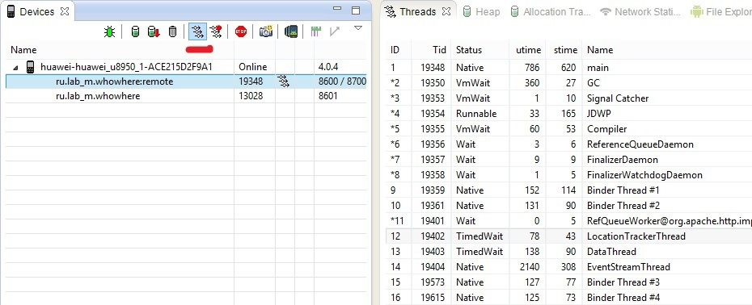

http://habrahabr.ru/post/222199/
DDMS содержит инструмент, который позволяет нам анализировать информацию по каждому процессу и его потокам. Достаточно выделить необходимый процесс нашего приложения и нажать «update threads».
Запуск через командную строку
adb devices
ddms

Справа вы можете увидеть вкладку «Threads» и работающие потоки выбранного процесса. По каждому потоку доступна следующая информация:
Id – уникальный идентификатор потока, назначенный виртуальной машиной. Если рядом символ звездочки, то это демон-поток;
Tid – id потока в Linux. Главный поток процесса будет содержать id процесса;
Status – статус потока на данный момент;
Utime – общее время, которое поток потратил на выполнение пользовательского кода. Единицы измерения jiffies, длительность которой определяется системой и обычно составляет 10ms;
Stime – время, потраченное на выполнение системного кода. Единицы измерения также jiffies;
Name – имя потока. Не забывайте давать осмысленные имена при создании потока.
Created with the Personal Edition of HelpNDoc: Full-featured multi-format Help generator